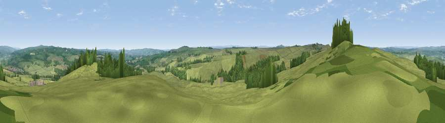

Viewpoint near Simonburn
#10150 in England · top 21% of its area beats it · near SimonburnWhere it is
The exact computed spot (NY 85575 75025). Click the marker for map links.
The view, rendered

A 360° render of this exact spot computed from the terrain model, tree cover and land cover — summer colours, afternoon light, calibrated against photographs of famous viewpoints. Real trees, hedges and buildings will differ in detail.
The panorama
Grey silhouette: terrain skyline in each direction (720 bearings, Earth curvature and refraction included). Dashed green: skyline with trees (+15 m) and buildings (+8 m) as obstacles. Blue strip: how far the ground is visible on each bearing.
Where the view opens
Wedge length = distance to the farthest visible ground on that bearing (vegetation-aware). Rings at 10, 25 and 50 km.
What fills the view
79% grassland · 15% woodland · 6% cropland
Angular shares of the visible panorama (visual magnitude), not map area. Landscape diversity 0.29 (0–1 Shannon).
Key numbers
More beautiful places nearby
The staircase of upgrades: each row has a higher view potential than everything closer. Driving times are estimates from straight-line distance, calibrated against real road routing — check an actual route before setting out.
| Place | Direction | Drive | Score |
|---|---|---|---|
| Viewpoint c11477_7613 | WSW · 5 km | ~11 min | 68.2 |
| Viewpoint near Bardon Mill | SW · 7 km | ~15 min | 71.0 |
| Viewpoint near Fourstones | SE · 9 km | ~17 min | 71.4 |
| Viewpoint near West Woodburn | NE · 12 km | ~22 min | 73.4 |
| Darden Rigg | NNE · 25 km | ~41 min | 77.0 |
| Monkside | NW · 26 km | ~42 min | 78.4 |
| Viewpoint near Bewcastle | W · 27 km | ~43 min | 78.9 |
| Viewpoint c11644_7156 | WNW · 29 km | ~45 min | 80.8 |
55.06948, -2.22742 · source: screening · position refined by local search. Computed location — check access rights before visiting.